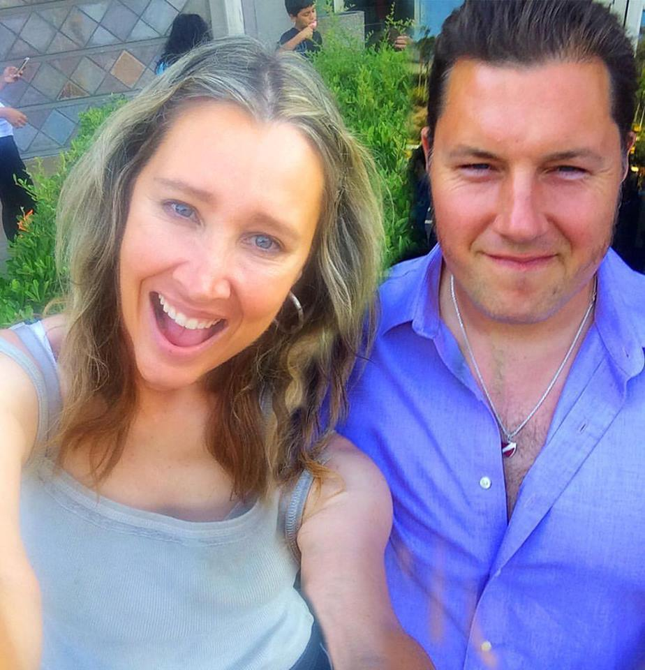
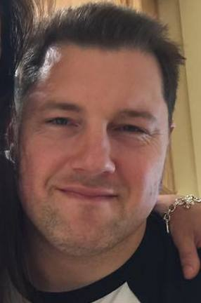

Peter Charles Danenberg Jr. b. 1978
Peter himself.
Living. As for every living relative on this site, the birth date is given by year only, and no current address is shown.
Also recorded as Peter Charles Danenberg.
Peter Charles Danenberg Jr. was born in 1978 in Los Angeles, California, United States (according to an online family tree)2, the son of Peter Valentins Danenbergs and Kathleen Diane Hall27,28. He married Genevieve Elisa Symanski Nelson on 10 Sep 2006 (according to the family's 2015 tree)29. He married Shayla Nadah Alamdari on 14 Feb 2011 (according to the family's 2015 tree)30.
Family
- Parents
- Peter Valentins Danenbergs b. 1942 and Kathleen Diane Hall b. 1947 documented
- Wife
- Genevieve Elisa Symanski Nelson b. 1988 · married on 10 Sep 200629
- Children
- Mneme Gloria Danenberg b. 2007 documented
- Wife
- Shayla Nadah Alamdari b. 1985 · married on 14 Feb 201130
- Children
- Kairos Coriolanus Danenberg b. 2012 documented
- Arete Þórisdóttir Danenberg b. 2013 documented
- Aletheia Saint-Saëns Danenberg b. 2014 documented
- Chronos Zarathustra Danenberg b. 2015 tradition
- Eos Adelaide Danenberg b. 2018 tradition
Life events
| Event | Date | Place and details |
|---|---|---|
| Born | 1978 | Los Angeles, California, United States According to an online family tree2 |
| Lived | bet 1978 and 1984 | La Cañada Flintridge, California, United States3 |
| Lived | 1 Jan 1988 | Pasadena, California, United States4 |
| Lived | bet 1988 and 1995 | Altadena, California, United States5 |
| Education | 27 Oct 1993 | Pasadena, California, United States Student and varsity football player (wide receiver/pass catcher: 1 reception for 27 yards, 27.0 avg) at Maranatha High School (Alpha League, Sierra Madre / Pasadena area, California) in autumn 1993 (sophomore year, age 15, prior to matriculating at USC in 1995); also listed in the 10 November 1993…9 |
| Education | bet 1995 and 2000 | Los Angeles, California, United States B.A., University of Southern California, 1995–2000. His CV lists the subjects as 'Computer Science, Classics, Philosophy, German, Piano'; the AI for Good speaker page says 'B.A. in Computer Science, Classics, Philosophy, and German from USC'; the Marquis Who's Who release says 'a bachelor's degree…10 |
| Education | bet 2000 and 2008 | Cambridge, Massachusetts, United States Three doctoral programmes, none completed: Harvard University, Ph.D. candidate in Comparative Literature, 2000–2002; University of Freiburg, Ph.D. candidate in Philosophy, 2002–2004; University of Southern California, Ph.D. candidate in Computer Science, 2004–2008. The Marquis release adds…11 |
| Education | bet 2002 and 2004 | Freiburg im Breisgau, Germany Ph.D. candidate in Philosophy at the University of Freiburg (Albert-Ludwigs-Universität Freiburg, Freiburg im Breisgau, Germany), 2002–2004.12 |
| Work | bet 2005 and 2008 | Marina del Rey, California, United States Research Assistant, USC Information Sciences Institute, 2005–2008: multi-agent simulation environments for computational social science. Published with Stacy Marsella (BRiMS 2010, 'Data-Driven Coherence Models').13 |
| Lived | bet 11 May 2006 and 2011 | Altadena, California, United States6 |
| Married | 10 Sep 2006 | with Genevieve Elisa Symanski Nelson According to the family's 2015 tree29 |
| Work | 2008 | Mountain View, California, United States Intern, Google, Inc., summer 2008: 'Created Roxygen, R's in-source documentation system; its successor, roxygen2, which I co-author, has over 21 million downloads.'14 |
| Work | bet 2008 and 2011 | Los Angeles, California, United States Senior Software Architect, Response Genetics (2008–2011) — his mother's company: 'Built, from scratch, a HIPAA-compliant lab system that took a tumor sample from intake through robotic pipetting and sequencing to a chemotherapy-response prediction for the oncologist. Worked with Roche, Pfizer, and…15 |
| Note | bet 2009 and 2026 | Palo Alto, California, United States GitHub account klutometis (user id 85991), opened 18 May 2009; name 'Peter Danenberg'; location 'Palo Alto'; blog https://danenberg.ai; 141 public repositories, 9 gists, 181 followers. Bio: 'Senior SWE Google DeepMind · Research Fellow Oxford Ethics in AI · Built Gemini Canvas & Agent · co-created…21 |
| Note | bet 2010 and 2026 | Talks and publications, from his own CV: Danenberg & South, 'Inside the Frontier Labs', Imagination in Action, Silicon Valley (2026); 'LLMs: Mercenary or Citizen?', AI for Good Global Summit, Geneva (2026); 'Inversion of Control: Humans Working for AI', MIT Science Dinner and StartSe AI Festival,…22 |
| Work | bet 2011 and 2014 | Pasadena, California, United States Co-founder, CrossFit Crown City (2011–2014): 'Built the gym from scratch to 450 members across two locations; coached five classes a day, seven days a week.' 'Crown City' is Pasadena's nickname; the Marquis release also puts him in the Pasadena Rugby Football Club.16 |
| Work | bet 2011 and 2013 | Santa Monica, California, United States Senior Data Developer, TrueCar, Inc. (2011–2013): built the map-reduce platform that ingested dealership inventory and the pricing models behind TrueCar's consumer app.17 |
| Married | 14 Feb 2011 | with Shayla Nadah Alamdari According to the family's 2015 tree30 |
| Lived | bet 2013 and Sep 2022 | Mountain View, California, United States7 |
| Work | bet 2013 and 2024 | Mountain View, California, United States Senior Software Engineer, Google, Inc., 2013–2024. Bard Extensions (the tool-calling reasoning loop; launched to 1.8 million daily users) and Google Assistant (neural-semantic models serving about 120 million queries a day; C++ backend; training and evaluation automated for 54 models in 18…18 |
| Note | 18 Sep 2015 | Rīga, Vidzeme, Latvia Registered as a dual citizen of Latvia and the United States in September 2015; assigned Latvijas personas kods [ID number omitted]. Issued Latvian citizen passport Nr. [ID number omitted] on 18 September 2015 by PMLP Rīgas 9. nodaļa (valid until 17 September 2025; height 193 cm), transmitted via the Embassy of…23 |
| Work | bet 2024 and 2026 | Palo Alto, California, United States Senior Software Engineer, Google DeepMind, since 2024. Zero-to-one prototyping for Gemini: Harness, Mneme, Gemini Agent (the computer-use prototype that shipped), Gemini Canvas (the artifact prototype that shipped), Little PAIPer (with Peter Norvig), and the Gemini Meetup, a biweekly workshop…19 |
| Lived | bet 2025 and 2026 | Palo Alto, California, United States8 |
| Note | 15 Jan 2025 | Palo Alto, California, United States Selected for inclusion in Marquis Who's Who, announced 15 January 2025 with a Palo Alto dateline. The release adds biographical detail not on his own CV: memberships of the Pasadena Rugby Football Club, Chabad Palo Alto and the Google Rugby Football Club; that he plays piano and spends time 'with…24 |
| Work | 2026 | Oxford, England, United Kingdom Senior Research Associate / Senior Research Fellow, Oxford HAI Lab — the Oxford Institute for Ethics in AI — from 2026, with Philipp Koralus and Edward Harcourt, on whether LLMs can carry out goal-directed, truth-seeking inquiry with people. Projects: Aletheia (an AI philosophy tutor) and…20 |
| Note | 2026 | Identifiers and published contact details: site danenberg.ai and peter.danenberg.ai; email [email omitted] (LinkedIn contact info) and [email omitted] (CV); telephone [phone omitted] (CV); LinkedIn https://www.linkedin.com/in/peterdanenberg (member urn 18793060, 5,886 followers,…25 |
| Note | According to an online family tree26 | |
| Divorced | with Genevieve Elisa Symanski Nelson According to the family's 2015 tree31 |
Photographs



Records


Sources
- MyHeritage family tree 'Dzimta' of Peter's third cousin (his family site), member GEDCOM export of 26 Oct 2026, I500167 (person-6500167), GEDCOM lines 10273–10329.
NAME Peter Charles /Danenberg/
- MyHeritage family tree 'Dzimta' of Peter's third cousin (his family site), member GEDCOM export of 26 Oct 2026, I500167 (person-6500167), GEDCOM lines 10273–10329.
BIRT · 1978 · Los Angeles, California, USA
His record match: ASV Publisko Ierakstu Indekss, https://www.myheritage.lv/research/collection-10220/asv-publisko-ierakstu-indekss?itemId=706707761&action=showRecord: 'Peter C Danenberg | Dzimšana: 1978'. His record match: Kalifornija Dzimšanas, 1905 - 1995, https://www.myheritage.lv/research/collection-10070/dzim%C5%A1anas-ieraksti?itemId=13985481&action=showRecord: 'Peter Charles Danenberg | Dzimums: Vīrietis | Dzimšana: 1978 - Los Angeles, California, USA | Mātes pirmslaulības uzvārds: Hall'.
- [address omitted], La Canada, California 91011-3713 & Glendale High School Class of 1984.
Kathleen Diane Danenberg … Iespējamie radinieki: VārdsDzimšanaPeter Valentin Danenberg1942.gada [day omitted]Liga Irene Danenberg1966.gada [day omitted]Peter C Danenberg … [address omitted], USA … Glendale HS Class of '84 (California) · Liga Danenberg
Childhood home at [address omitted], La Cañada Flintridge, Los Angeles County, California with his parents and sister Līga (who graduated from nearby Glendale High School in 1984) before the family moved to Pasadena by 1 January 1988.
- [address omitted], Pasadena, California 91101-3903 (1 Jan 1988).
[address omitted], PasadenaCalifornia 91101-3903, USA1988.gada 1. Jan
Lived with his parents in Pasadena, Los Angeles County, California on 1 January 1988 (at [address omitted], Pasadena) before the family moved to nearby Altadena.
- [address omitted], Altadena, California 91001-1527 & USC B.A. (1995–2000).
[address omitted], AltadenaCalifornia 91001-1527, USA … 1995–2000 USC B.A., Computer Science, Classics, Philosophy, German, Piano
Lived with his parents and sister at his parents' longtime home at [address omitted], Altadena, Los Angeles County, California before beginning undergraduate studies at USC in 1995.
- Peter C Danenberg — [address omitted], Altadena, California 91001-2729 (11 May 2006).
Peter C Danenberg | Dzimšana: 1978 | Iespējamie radinieki: Genevieve E Danenberg 1988, Kathleen D Danenberg | Dzīves vietas: [address omitted], Altadena, California 91001-2729, USA, 11. Mai 2006
Recorded in the US Public Records Index at [address omitted], Altadena, California 91001-2729 on 11 May 2006 with his first wife Genevieve E. Danenberg (whom he married on 10 September 2006, and with whom he had daughter Mneme in 2007) and associated relative Kathleen D. Danenberg.
- Building sandcastles in December — Mountain View resident Shayla Danenberg and family.
This past summer, Mountain View resident Shayla Danenberg created a to-do list of state beaches and parks to visit with her husband and their four children … The Danenberg family — Peter, holding Arete, 2, and Chronos, 5 months, and Shayla, holding Aletheia, 18 months, and Kairos, 3
Moved with his wife Shayla and their children from Pasadena to Mountain View, Santa Clara County, California after joining Google in 2013; the 17 December 2015 Palo Alto Weekly feature and Shayla's Etsy profile describe the family as Mountain View residents before their September 2022 move to [address omitted], Palo Alto.
- Peter Danenberg — profile.
"location": "Palo Alto, California, United States"
Palo Alto, California: his LinkedIn location, his GitHub location, and the dateline of the January 2025 Marquis release. (Earlier, Pasadena — CrossFit Crown City and the Pasadena Rugby Football Club.)
- High School Report (Individual Leaders — Receiving), Pasadena Star-News (Pasadena, California), 27 October 1993, p. 22; 10 November 1993, p. 24; 17 November 1993, p. 24.
RECEIVING Player, School No. Yds Ave TD ... Isaac Chung, Mara. 3 73 24.3 0 Londell Ramsey, Marsh. 2 37 18.5 0 Ross Driscoll, St Frn 2 10 5.0 0 Peter Danenberg, Mara. 1 27 27.0 0 Ryan Conway, St Fran. 1 11 11.0 0
Student and varsity football player (wide receiver/pass catcher: 1 reception for 27 yards, 27.0 avg) at Maranatha High School (Alpha League, Sierra Madre / Pasadena area, California) in autumn 1993 (sophomore year, age 15, prior to matriculating at USC in 1995); also listed in the 10 November 1993 and 17 November 1993 Pasadena Star-News High School Report.
- Peter Danenberg — CV, Education.
1995–2000 USC B.A., Computer Science, Classics, Philosophy, German, Piano
B.A., University of Southern California, 1995–2000. His CV lists the subjects as 'Computer Science, Classics, Philosophy, German, Piano'; the AI for Good speaker page says 'B.A. in Computer Science, Classics, Philosophy, and German from USC'; the Marquis Who's Who release says 'a bachelor's degree in classics, philosophy, piano, and German at the University of Southern California in 2000'. He was also Representative to the USC Board of Trustees (LinkedIn education blurb).
- Peter Danenberg — CV, Education.
2004–2008 USC Ph.D. candidate, Computer Science / 2002–2004 University of Freiburg Ph.D. candidate, Philosophy / 2000–2002 Harvard University Ph.D. candidate, Comparative Literature
Three doctoral programmes, none completed: Harvard University, Ph.D. candidate in Comparative Literature, 2000–2002; University of Freiburg, Ph.D. candidate in Philosophy, 2002–2004; University of Southern California, Ph.D. candidate in Computer Science, 2004–2008. The Marquis release adds coursework in philosophy at the University of Cambridge and in classics at the International Center for Hellenic and Mediterranean Studies, coursework in France and Germany, 'a research fellowship in comparative literature at Harvard University', and 'in 2004 he returned to the University of Southern California to earn a master's degree in computer science' — his LinkedIn also lists a Master's in Computer Science. His Harvard alumni address, [email omitted], is on the CV.
- Peter Danenberg — CV, Education.
2002–2004 University of Freiburg Ph.D. candidate, Philosophy
Ph.D. candidate in Philosophy at the University of Freiburg (Albert-Ludwigs-Universität Freiburg, Freiburg im Breisgau, Germany), 2002–2004.
- Peter Danenberg — CV.
Research Assistant Information Sciences Institute (2005–2008). Developed multi-agent simulation environments for computational social science.
Research Assistant, USC Information Sciences Institute, 2005–2008: multi-agent simulation environments for computational social science. Published with Stacy Marsella (BRiMS 2010, 'Data-Driven Coherence Models').
- Peter Danenberg — CV.
Intern Google, Inc. (Summer 2008). Created Roxygen, R's in-source documentation system
Intern, Google, Inc., summer 2008: 'Created Roxygen, R's in-source documentation system; its successor, roxygen2, which I co-author, has over 21 million downloads.'
- Peter Danenberg — CV.
Senior Software Architect Response Genetics (2008–2011)
Senior Software Architect, Response Genetics (2008–2011) — his mother's company: 'Built, from scratch, a HIPAA-compliant lab system that took a tumor sample from intake through robotic pipetting and sequencing to a chemotherapy-response prediction for the oncologist. Worked with Roche, Pfizer, and Novartis on their clinical trials.' His years there overlap his mother's last years as CEO (she stepped down July 2011).
- Peter Danenberg — CV.
Co-founder CrossFit Crown City (2011–2014). Built the gym from scratch to 450 members across two locations; coached five classes a day, seven days a week.
Co-founder, CrossFit Crown City (2011–2014): 'Built the gym from scratch to 450 members across two locations; coached five classes a day, seven days a week.' 'Crown City' is Pasadena's nickname; the Marquis release also puts him in the Pasadena Rugby Football Club.
- Peter Danenberg — CV.
Senior Data Developer TrueCar, Inc. (2011–2013)
Senior Data Developer, TrueCar, Inc. (2011–2013): built the map-reduce platform that ingested dealership inventory and the pricing models behind TrueCar's consumer app.
- Peter Danenberg — CV.
Senior Software Engineer Google, Inc. (2013–2024)
Senior Software Engineer, Google, Inc., 2013–2024. Bard Extensions (the tool-calling reasoning loop; launched to 1.8 million daily users) and Google Assistant (neural-semantic models serving about 120 million queries a day; C++ backend; training and evaluation automated for 54 models in 18 languages). The Marquis release says he joined Google in 2013 as a data infrastructure engineer and later advanced to senior software engineer.
- Peter Danenberg — CV.
Senior Software Engineer Google DeepMind (2024–). Zero-to-one prototyping for Gemini: working features within 24 hours, demoed to Demis Hassabis, Sundar Pichai, Josh Woodward, Rick Osterloh, and Shakil Barkat.
Senior Software Engineer, Google DeepMind, since 2024. Zero-to-one prototyping for Gemini: Harness, Mneme, Gemini Agent (the computer-use prototype that shipped), Gemini Canvas (the artifact prototype that shipped), Little PAIPer (with Peter Norvig), and the Gemini Meetup, a biweekly workshop series he founded and runs. LinkedIn headline (Oct 2026): 'Senior Software Engineer | LLMs & Rapid Prototyping | Google DeepMind', location Palo Alto, California.
- Peter Danenberg — CV.
Senior Research Associate Oxford HAI Lab (2026–). With Philipp Koralus and Edward Harcourt, on whether LLMs can carry out goal-directed, truth-seeking inquiry with people.
Senior Research Associate / Senior Research Fellow, Oxford HAI Lab — the Oxford Institute for Ethics in AI — from 2026, with Philipp Koralus and Edward Harcourt, on whether LLMs can carry out goal-directed, truth-seeking inquiry with people. Projects: Aletheia (an AI philosophy tutor) and Praeter-Life, a book in progress 'on when a made thing becomes a companion', built on 227 million records from 35 collections, Sumerian to K'iche' Maya.
- klutometis.
"login": "klutometis", "name": "Peter Danenberg", "blog": "https://danenberg.ai", "location": "Palo Alto", "created_at": "2009-05-18T18:13:28Z", "public_repos": 141
GitHub account klutometis (user id 85991), opened 18 May 2009; name 'Peter Danenberg'; location 'Palo Alto'; blog https://danenberg.ai; 141 public repositories, 9 gists, 181 followers. Bio: 'Senior SWE Google DeepMind · Research Fellow Oxford Ethics in AI · Built Gemini Canvas & Agent · co-created Little PAIPer w/ Peter Norvig · Roxygen'.
- Peter Danenberg — Speaking & Media.
Since October 2023, I have delivered 70+ speaking engagements, podcast appearances, and media features across 4 continents and 10+ countries … Since 2026, I am also a Senior Research Fellow at the Oxford Institute for Ethics in AI
Talks and publications, from his own CV: Danenberg & South, 'Inside the Frontier Labs', Imagination in Action, Silicon Valley (2026); 'LLMs: Mercenary or Citizen?', AI for Good Global Summit, Geneva (2026); 'Inversion of Control: Humans Working for AI', MIT Science Dinner and StartSe AI Festival, São Paulo (2026); Danenberg & Wissner-Gross, 'Are We Treating AI Unethically?', Imagination in Action, Davos (2026); 'How Classical Thinking Shaped Modern AI', TEDxBoston (2025); 'Towards a Positive Ethics of AI', Oxford Institute for Ethics in AI (2025); 'The Future of AI', Magdalen College, Oxford (2025); 'Competence in the Age of LLMs', TEDxCSTU (2025); 'What is AI?', Westminster Technology Forum, House of Lords (2024); 'Learnings on Building Gemini', Imagination in Action, MIT, and Forbes (2024); a Technical Disclosure Commons defensive publication (2023, no. 5812); 'Prompt-Engineering with Bard', Devfest, Google (2023); listed contributor, Gemini Team Google, 'Gemini: A Family of Highly Capable Multimodal Models', arXiv:2312.11805 (2023); Danenberg & Marsella, 'Data-Driven Coherence Models', BRiMS 2010. His speaking page counts 70+ engagements since October 2023 across 4 continents and 10+ countries, and 80 Gemini Meetup events with 17,000+ RSVPs.
- Latvijas pilsoņa pase ([ID number omitted].) un vēstniecības vēstule Nr. 3.3.2.-1081 (13.10.2015.), [ID number omitted]; MFA Nr. 3.3.2.-1081.
[ID number omitted] / DANENBERGS / PĒTERIS ČĀRLZS / LATVIJAS / 1978 / [ID number omitted] / PMLP RĪGAS 9.NODAĻA / SAVIENOTĀS VALSTIS/USA / 18.09.2015. / 17.09.2025.
Registered as a dual citizen of Latvia and the United States in September 2015; assigned Latvijas personas kods [ID number omitted]. Issued Latvian citizen passport Nr. [ID number omitted] on 18 September 2015 by PMLP Rīgas 9. nodaļa (valid until 17 September 2025; height 193 cm), transmitted via the Embassy of Latvia in Washington, D.C. on 13 October 2015 (letter Nr. 3.3.2.-1081 to [address omitted], Mountain View, CA 94043). Holds US Passport [ID number omitted] (issued 25 Nov 2020, expires 24 Nov 2030).
- Marquis Who's Who Honors Peter Danenberg for Expertise in Software Engineering.
Outside of work, Mr. Danenberg is deeply involved in associations such as the Pasadena Rugby Football Club, Chabad Palo Alto, and the Google Rugby Football Club. … In his personal life, Mr. Danenberg finds joy in playing piano and spending quality time with his wife and children. Inspired by his mother's entrepreneurial spirit, he aspires to establish his own company
Selected for inclusion in Marquis Who's Who, announced 15 January 2025 with a Palo Alto dateline. The release adds biographical detail not on his own CV: memberships of the Pasadena Rugby Football Club, Chabad Palo Alto and the Google Rugby Football Club; that he plays piano and spends time 'with his wife and children'; and that he was 'inspired by his mother's entrepreneurial spirit' and hopes to found his own company. (Marquis is pay-to-be-listed in practice; treat the honour itself as promotional, the biographical details as his own account.)
- Peter Danenberg — CV header.
Peter Danenberg [phone omitted] ◦ [email omitted]
Identifiers and published contact details: site danenberg.ai and peter.danenberg.ai; email [email omitted] (LinkedIn contact info) and [email omitted] (CV); telephone [phone omitted] (CV); LinkedIn https://www.linkedin.com/in/peterdanenberg (member urn 18793060, 5,886 followers, 5,395 connections); GitHub klutometis; Gemini Meetup https://lu.ma/geminimeetup; ORCID 0009-0003-8754-064X is registered to 'Peter Charles Danenberg' with an employment at Google DeepMind (London) and nothing else — almost certainly his, but it holds no works, so it is recorded as probable, not certain. Semantic Scholar author 50493926 'Peter C. Danenberg', 9 papers, 285 citations.
- MyHeritage family tree 'Dzimta' of Peter's third cousin (his family site), member GEDCOM export of 26 Oct 2026, I500167 (person-6500167), GEDCOM lines 10273–10329.
RESI
- Peter's tree, danenberg.sql, 2007–2015, parentages 47.
- Lēmums Nr. 3959 (13.09.2021.) un Lēmums Nr. 3957 (13.09.2021.), PMLP PSKN Nr. 3959 & Nr. 3957.
Pēteris Čārlzs Danenbergs dzimis 1978 ASV, vecāki: Ketlīna Diāna Halla un Pēteris Valentīns Danenbergs.
Translation: Pēteris Čārlzs Danenbergs was born on 1978 in the USA; parents: Ketlīna Diāna Halla and Pēteris Valentīns Danenbergs.
father: Peter Valentins Danenbergs; mother: Kathleen Diane Hall
- Peter's tree, danenberg.sql, 2007–2015, unions 14, inauguration.
- Peter's tree, danenberg.sql, 2007–2015, unions 15, inauguration.
- Peter's tree, danenberg.sql, 2007–2015, unions 14, status=1 (divorced).